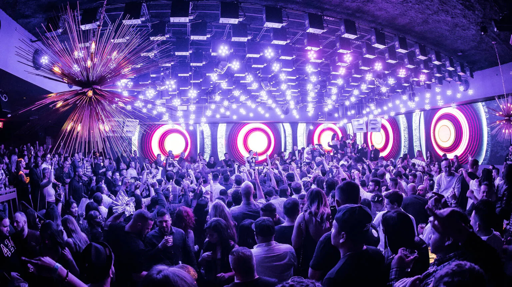
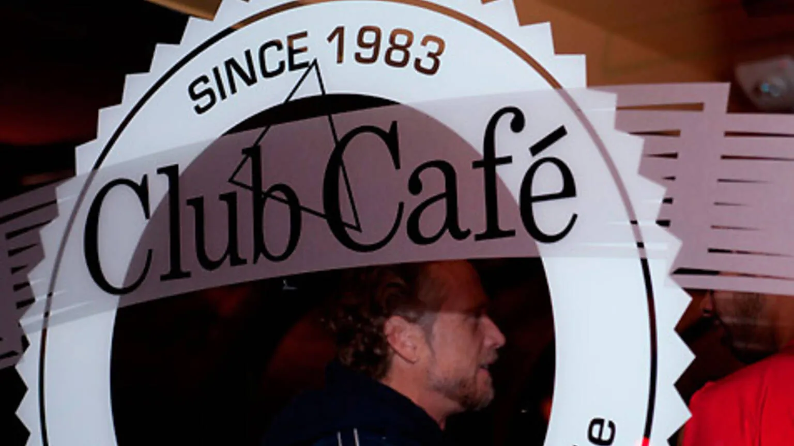
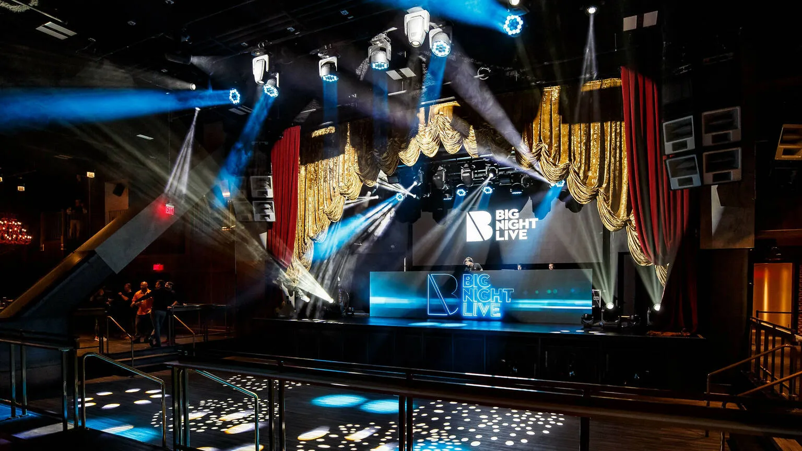
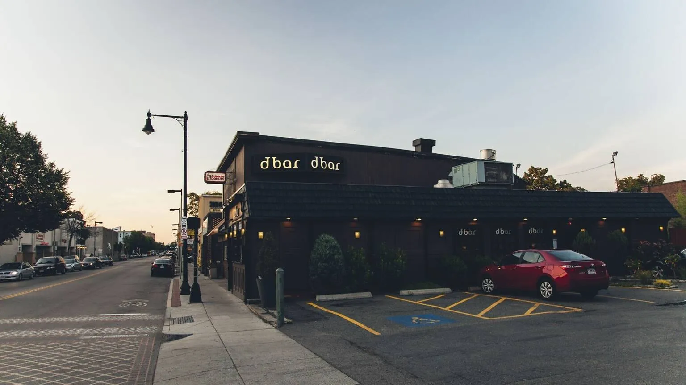

There are many clubs in Boston but best clubs of boston are listed below:
Big Night Entertainment Group is behind the city's most high-end nightlife experience: 12,000 square feet of stylish fun, located smack dab in the middle of the bustling Seaport.

Boston’s long-standing restaurant, piano bar, cabaret space and dance club will satisfy whatever nightlife craving you’re dealing with.

This glamorous music venue captures the essence of elegant music halls and supper clubs of the past—obviously, just with all of the modern bells and whistles. The space features luxury seating, beautiful decor, several bars.This glamorous music venue captures the essence of elegant music halls and supper clubs of the past—obviously, just with all of the modern bells and whistles. The space features luxury seating, beautiful decor, several bars

This former Irish pub still boasts its dark wood interior, but now, it features a lengthy martini list and an upscale menu from chef Chris Coombs. After 10pm on the weekends, this restaurant turns on the smoke machines, lights and rib-shaking subwoofers.
